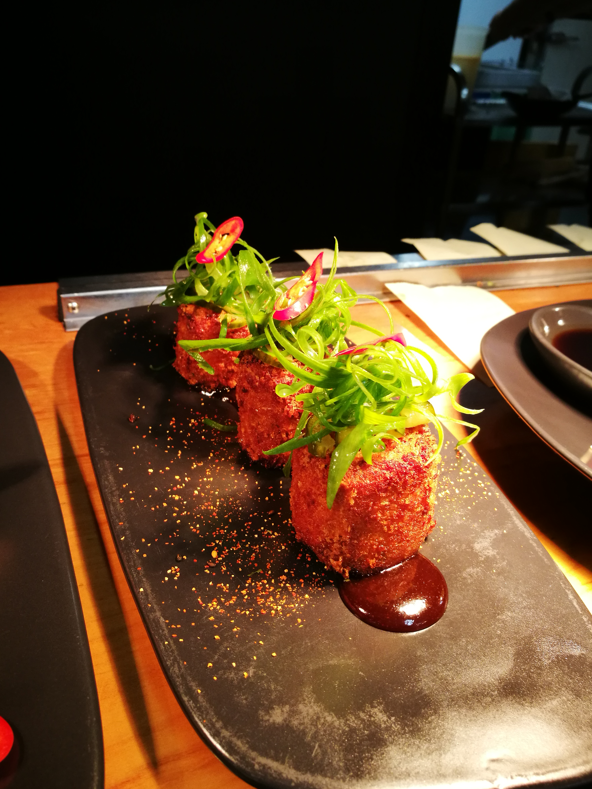
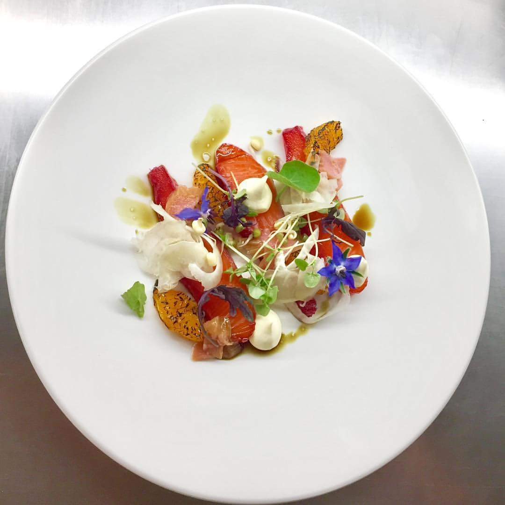
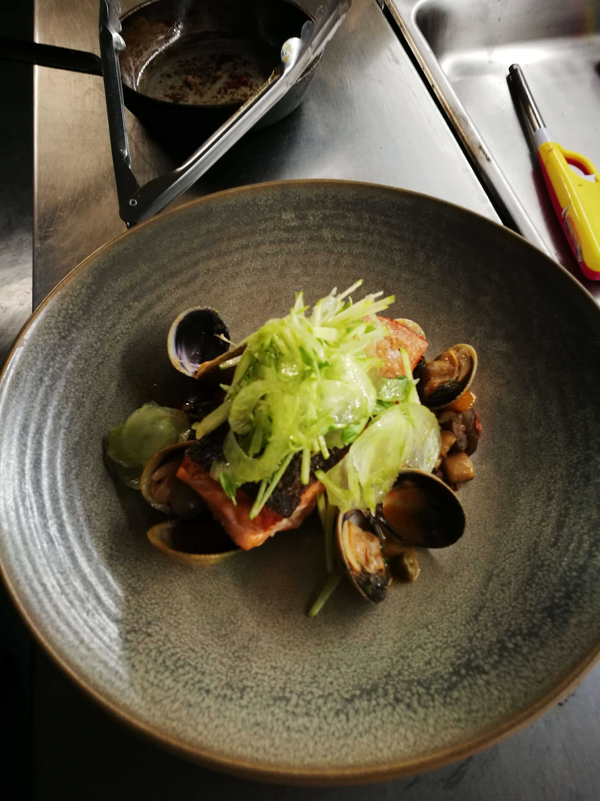
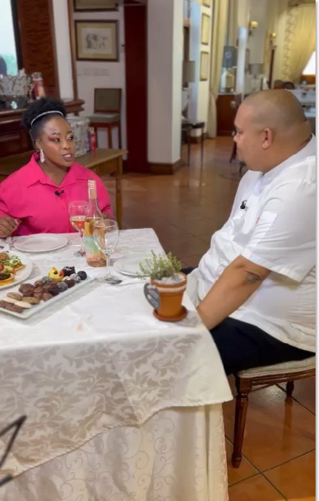

<h2>Cooking Portfolio & Media</h2>
<ul>
    
    
    
    
     
    <br/>
    
    
    
    
    
    
</ul>

<h4>Interview on Kaszi Kitchen</h4>
<ul>
<a href="https://youtu.be/5lzPb2dqqNk"></a>
</ul>
<br/>
Other picturess available from my <a href="https://drive.google.com/drive/folders/0B8eYAg1IGKdlQXRqa1NMQnkzWmM?resourcekey=0-BZvwugnnDTshbG6cK-cBvQ&usp=drive_link">Google Drive</a>
